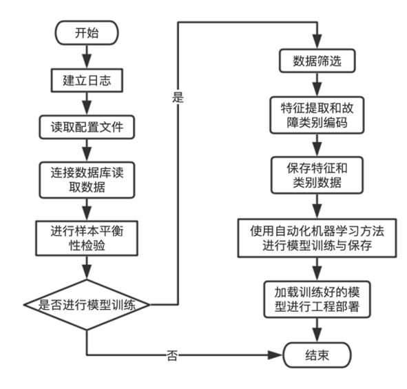
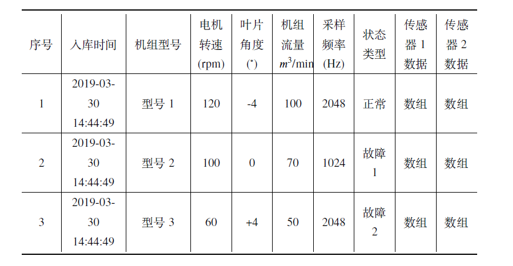
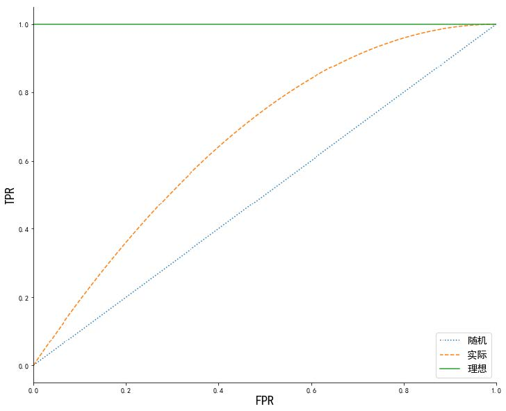
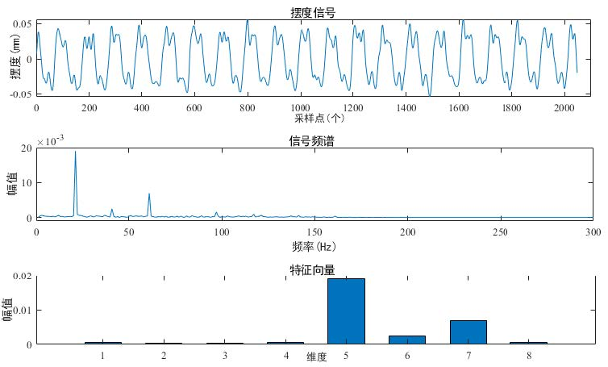
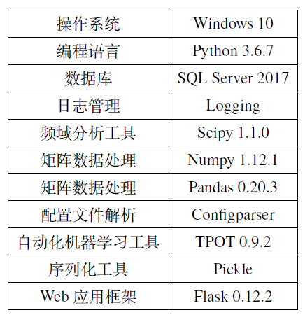
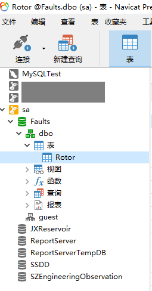
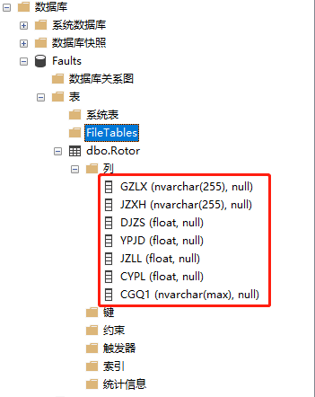
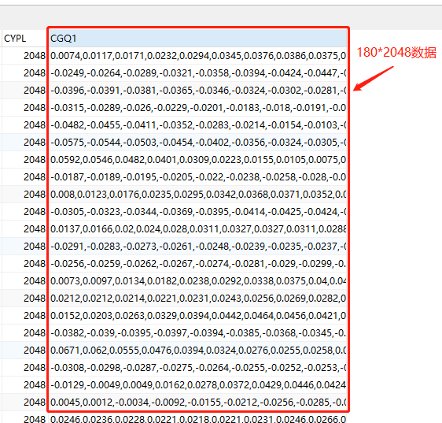

故障诊断系统概述
研究的基于自动化机器学习的故障诊断系统既具有故障诊断算法训练功能，也具有算法部署功能。它会读取故障数据，进行特征提取，然后使用自动化机器学习方法找出最优机器学习流程，并将该流程训练好保存下来，最后使用Web服务器对故障诊断算法进行部署。所研究的故障诊断系统具有高度自动化、功能拓展方便、模型更新方便的特点。
本系统由以下几个子部分构成：
（1）系统运行日志。日志是对系统运行状态的记录，它可以帮助检验系统运行是否正常，在出现异常情况时可以帮助使用者快速查找错误。日志的记录是分级别的，一般分为DEBUG、INFO、WARNING、ERROR、CRITICAL 五个级别，这五个级别的严重程度越来越高。
（2）系统配置文件。系统配置文件本质上是文本文件，通过配套的文本解析方法可以提取出变量名及其对应的设定值。系统在主功能运行前读取配置文件，从而设定程序的运行模式或训练任务，达到不改变代码就可以改变程序运行的效果。
（3）故障样本数据库。所研究的故障诊断算法是基于机器学习的，而机器学习方法是由数据驱动的，因此一个故障样本数据库是必要的。由于本文研究对象泵站机组具有型号多、运行工况复杂的特点，故障样本数据库在设计的时候充分考虑了这些特点。
（4）样本平衡性检验。在用数据进行训练之前，应该对样本平衡性进行检验，样本数量比较少的做一些特殊处理，样本数量太少的应从训练集里予以剔除，更失衡严重的就终止本次训练，等待数据收集完毕后再开始。
（5）故障特征提取。从故障数据库获得的数据是传感器数据，而传感器数据是无法直接作为机器学习算法输入的。为了提高故障诊断算法的效果，应该先对数据库中传感器数据使用快速傅里叶变换进行预处理。
（6）使用TPOT进行模型训练。采用基于遗传算法的自动化机器学习方法TPOT是使用遗传算法对特征归一化、特征选择、模型和参数选择等环节组成的机器学习流程进行自动构建并寻优的方法。
（7）故障诊断模型工程部署。所研究的故障诊断模型工程部署方法是基于Python轻型Web服务器框架Flask通过HTTP协议实现Python环境与Java环境的交互。
故障诊断系统工作流程图如下所示：

故障诊断系统研究
故障数据库设计规范
在泵站机组型号或运行工况不一样的情况下，虽然机组发生了同一种故障类型，但同样位置的传感器数据会有所不同，这就导致提取的特征也有点不同。因此，在故障数据存储时必须要体现出故障样本的来源背景，这里用机组型号和运行工况来表示。
以机组某个部件有两个传感器为例设计的故障数据库规范如下表所示：

故障样本不平衡处理
样本不平衡下的训练方法
针对样本不平衡下的训练数据集采用简单易行的调整类的权重方法，该方法是在误差函数里添加类别权重，以达到误差平衡，带权重的误差函数为：
$$
\text { error }=\frac{\sum_{i=1}^{n} w_{i}\left(y_{i}^{\prime}-y_{i}\right)^{2}}{n}
$$
其中：
$𝑛$ 代表样本总数；
$𝑤_𝑖$ 代表第$i$个样本所在类别的权重；
$y_{i}^{\prime}$代表第$i$个样本的预测结果；
$𝑦_𝑖$代表第$i$个样本的实际结果。
样本不平衡下的评估方法
在统计和机器学习中，常常用AUC 来评估二分类模型的性能（多分类也可以使用，作为二分类的拓展）。AUC 的全称是Area under the curve，即曲线下的面积。通常这里的曲线指的是受试者操作曲线(Receiver Operating Characteristic,ROC)。相比于准确率、召回率、F1 值等依赖于判决阈值的评估指标，AUC则没有这个问题。
ROC 曲线：

AUC值为ROC 曲线下方所覆盖的区域面积，AUC越大, 说明曲线越靠近(0,1) 这个点，越接近理想曲线，分类效果自然更好。
AUC指标为什么可以作为样本不平衡情况下的模型评价指标？因为当用来验证算法效果的数据集中的样本比例发生变化时，ROC曲线的形状能够保持不变，而AUC是ROC曲线的下方面积，所以当模型一定时，AUC的值也不随正负样本分布的变化而变化，所以能够作为不平衡数据集的模型评价指标。
故障特征提取
泵轴的常见故障有油膜涡动、接触摩擦、油膜振荡、转子不平衡和转子不对中，这些故障都可以体现在泵轴的振动信号里，通常采用泵轴的摆度数值作为它的振动信号。通过利用FFT快速傅里叶变换将时域的振动信号转换为频域的能量分布。
下面对泵轴的转子不平衡故障数据进行特征提取实验，介绍如下：
（1）数据来源传感器：泵轴$Y$方向摆度信号
（2）数据滤波方法与窗函数：小波阈值去噪、汉宁窗
（3）基频$𝐹_0$、采样频率$𝐹_𝑠$和采样点数$𝑁$：$20Hz$、$2048Hz$、$2048$由上面几个数据，可得到下面几个频谱分析需要的参数：
（a）最高有效频率𝐹𝑚：𝐹𝑚 = 𝐹𝑠/2.56=800Hz
（b）频率分辨率𝛥𝐹 ：𝛥𝐹 = 𝐹𝑠/𝑁=2048/2048=1Hz
（c）谱线数𝑀：𝑀 = 𝑁/2.56=2048/2.56=800
下图为转子不平衡故障特征提取过程。

图中共有三个子图，其中最上面的图是泵轴摆度信号的时域图，表现出
了周期性，中间图是对摆度信号的时域数据作快速傅立叶变换得到的频谱，最下面图是从频谱提取的特征向量。
自动化机器学习工具TPOT
诊断算法的部署
设置Web服务器，通过HTTP协议进行调用。生产环境软件通过网络IP、端口将需要诊断的数据传递给Web服务器。Web服务器接受到数据后会进行诊断服务，在诊断结束后，诊断结果会原路返回给服务调用者。
诊断数据与Web 服务器之间使用HTTP协议进行通信，HTTP协议下有GET、POST、PUT 和DELETE 等方法，因为通信过程中需要传输传感器数据，所以这里使用可携带数据体的POST方法。
在故障诊断的各个环节中，诊断算法具有“一次加载、多次使用”的特点，而特征提取、算法调用等步骤随着传输数据的不同而采用不同的方法，所以故障诊断Web服务器在实现时应该按照这样的方式：加载诊断算法在创建故障诊断Web服务器时进行，数据获取、特征提取、调用诊断算法和诊断结果返回这些步骤在POST方法中实现。
故障诊断系统实现
故障诊断系统开发环境
故障诊断系统是在Windows 10上使用Python编程语言开发的，
其中数据库使用SQL Server，日志管理使用Logging，配置文件解析加载使用Configparser，频域分析工具包使用Scipy，矩阵数据处理使用Pandas 和Numpy，自动化机器学习工具使用TPOT，模型序列化保存工具使用Pickle，Web 应用框架使用Flask。
下表是详细的故障诊断系统开发环境。

建立故障数据库
利用数据库SQL Server 2017 与数据库可视化管理工具Navicat Premium进行搭建，首先参考Win10 SQL Server 2017安装，利用Navicat进行创建一个Faults数据库，并在Faults数据库中创建Rotor表如图所示：

然后根据数据库设计规范，在表中创建相对应的字段。如图所示:

注意： SQL Server 2017不支持数组形式，这里采用将数组转化为字符串,将他们拼接起来当做文本写入。
字段类型在设置的时候注意采用nvarchar(max)的类型，具体如下图：

Rotor数据, 数据是.mat文件，利用Python处理数据后，写入数据库CGQ1这一列中，最终如图所示：
